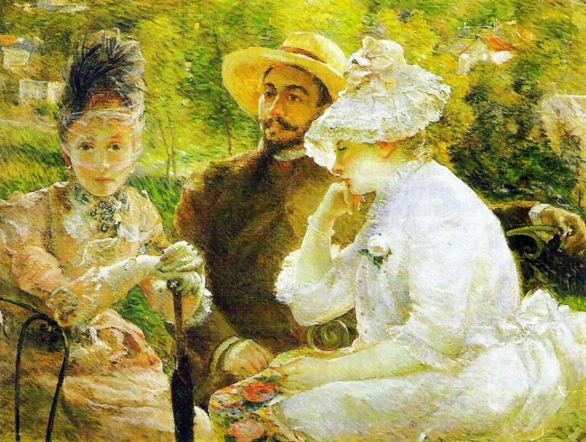
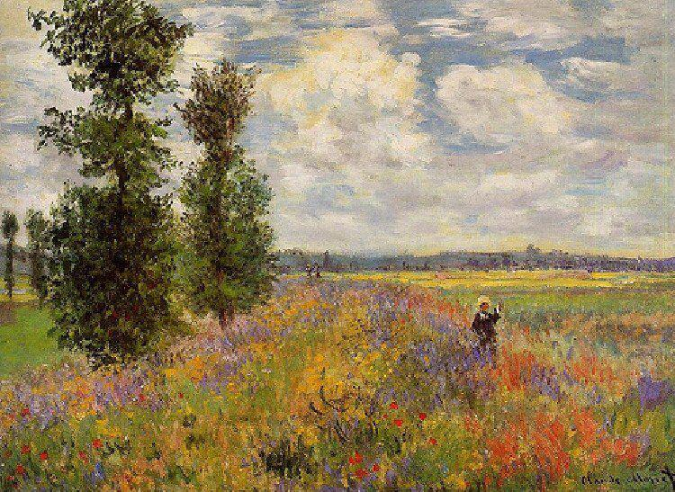
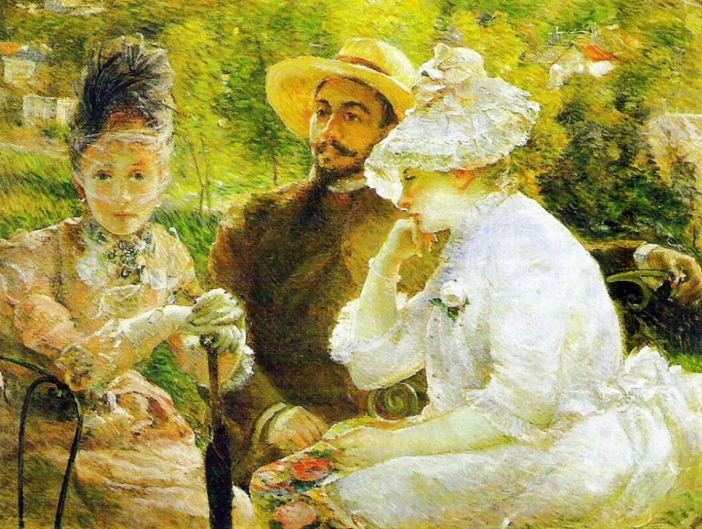
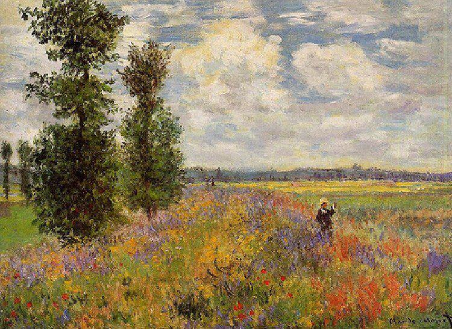

El Impresionismo fue un movimiento artístico que se desarrolló en Francia a finales del siglo XIX, y tuvo una gran
influencia en la pintura, la música, la literatura y la moda.
Una de las principales características del impresionismo es la utilización de colores brillantes y vibrantes, y la
técnica de la pincelada suelta, que buscaba capturar la sensación del momento, en lugar de representar una imagen
fielmente. Los artistas impresionistas buscaban capturar la luz y el color de un momento en particular, y para lograrlo,
trabajaban al aire libre y en diferentes momentos del día para capturar las diferentes tonalidades de luz.
El impresionismo también fue un movimiento que desafió las normas establecidas del arte de la época, y rompió con la tradición académica de la pintura. Los artistas impresionistas se alejaron de la representación realista y detallada de la figura humana, y optaron por representar momentos cotidianos, escenas de la vida urbana y paisajes naturales. Además, el impresionismo se caracterizó por una gran atención al detalle y la textura, y la utilización de técnicas como la superposición de capas de pintura y la utilización de contrastes de color.
También tuvo un gran impacto en la música y la literatura. En la música, el impresionismo se caracterizó por la utilización de armonías complejas y sutiles, y por la incorporación de elementos de la naturaleza en la composición. En la literatura, el impresionismo se reflejó en la utilización de técnicas como el monólogo interior y la descripción detallada de la percepción sensorial.
 



PRUEBA A DESLIZAR LA IMAGEN
En la moda, el impresionismo se manifestó en la utilización de telas livianas y colores brillantes, que buscaban imitar
la luminosidad de la pintura impresionista. Además, el impresionismo influyó en la forma en que se diseñaban los
estampados y los tejidos, con la utilización de motivos florales y elementos de la naturaleza.
Además de la técnica de la pincelada suelta y la utilización de colores brillantes, el impresionismo también se
caracterizó por el interés en la captación de la atmósfera y la transitoriedad de los fenómenos naturales, como las
variaciones de luz, la niebla y el humo. Los artistas impresionistas se interesaron por las transiciones sutiles de
color y tono que se producen en los paisajes naturales, y trataron de capturarlos en sus obras.
Aunque el impresionismo es generalmente asociado con la pintura, también tuvo un impacto en la escultura, la fotografía
y la arquitectura. En la escultura, los artistas impresionistas buscaron representar la transitoriedad de la luz y la
sombra en el mármol y el bronce, y utilizaron la técnica del modelado para crear obras de arte que parecieran estar en
constante cambio. En la fotografía, el impresionismo influyó en la utilización de técnicas como la impresión en tonos
sepia y la utilización de la luz natural para crear efectos atmosféricos.
En la arquitectura, el impresionismo se manifestó en la utilización de materiales como el hierro y el vidrio, que
permitían la entrada de la luz natural en los edificios. Los arquitectos impresionistas también buscaron crear espacios
que reflejaran la atmósfera y la sensación de la naturaleza, utilizando elementos como los arcos de medio punto y las
cúpulas.
El impresionismo también se asoció con un nuevo interés en la vida moderna y urbana. Los artistas impresionistas se
interesaron por las escenas cotidianas de la vida urbana, como los cafés, los parques y las estaciones de tren, y
utilizaron su técnica para representarlas de una manera vívida y realista. En general, el impresionismo se caracterizó
por un interés en la experiencia sensorial y la percepción subjetiva del mundo, y tuvo un gran impacto en la forma en
que los artistas pensaban sobre la representación de la realidad en el arte.